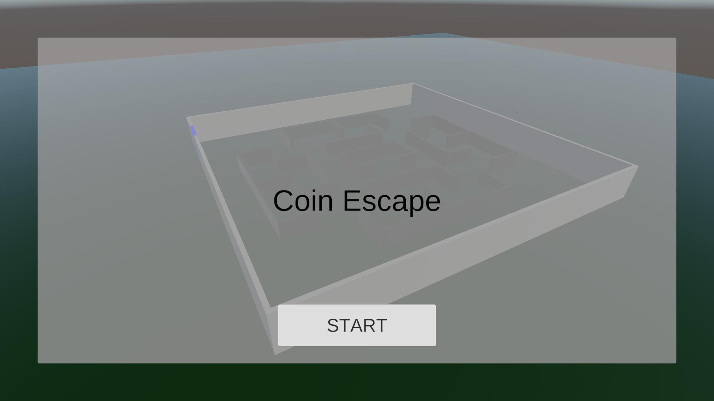

ゲーム一覧 ／ Escape
Escape
一人称視点で迷路を歩き、コインをすべて集めて出口を目指すタイムアタック。UniRxを使ったMVP構成で制作。
- ジャンル
- 一人称3D迷路脱出（タイムアタック）
- 開発期間
- 約1週間
- チーム構成
- 個人制作
- 使用言語・エンジン
- C# / Unity（6000.3.8f1）

作品概要
一人称視点で迷路の中を歩き回り、コインを集めて出口から脱出するゲームです。コインは決められた出現位置の中からランダムな場所に現れ、取るたびに別の位置へ移動します。必要な枚数を集めると出口の扉が開き、「Go to Exit!!」の表示とともに出口を目指します。出口に着くとクリアタイムが表示され、リスタートかタイトルに戻るかを選べます。
操作方法
- WASDキー：移動
- マウス移動：視点の操作
使用技術
Unity / C# / UniRx / UniTask / LitMotion / Input System / CharacterController / Animator / TextMesh Pro
担当内容（個人制作のため全体）
- Input SystemとCharacterControllerによる一人称の移動と視点操作
- コインのランダム出現・取得数の管理と、全取得で扉を開く処理
- 出口の判定とクリア画面、クリアタイムの計測
- フェードを使ったシーン遷移と、BGM・効果音の管理
技術解説
- プレイヤー・コイン・クリア・タイムをそれぞれPresenterとViewに分け、UniRxのSubjectでイベントを通知するMVP構成にした。
- 機能どうしは「Connecter」クラスで購読してつなぎ、コインとクリア、クリアとタイムが互いを直接参照しないようにした。
- マウスの移動量を、カメラの上下回転（角度を制限）とプレイヤー本体の左右回転に分けて反映。
- フェードとシーン読み込みをUniTaskで順番に待ち、LitMotionで透明度や「Go to Exit!!」の拡大縮小をアニメーション。
- AudioManagerとFadeControllerは共通のSingleton基底クラスを継承し、シーンをまたいで1つだけ存在するようにした。
開発情報
| ジャンル | 一人称3D迷路脱出（タイムアタック） |
|---|---|
| 開発期間 | 約1週間 |
| チーム構成 | 個人制作 |
| 担当役割 | 企画・プログラム全般 |
| 使用言語・エンジン | C# / Unity（6000.3.8f1）・Universal Render Pipeline |
| 開発環境 | Visual Studio Code / GitHub |
| 公開先 | ブラウザ版（WebGL・プレイ可能） |
| ソースコード | 実装コードの抜粋（サイト内） |
設計の工夫と選択理由
「何を選んだか」と「なぜ選んだか」、比較した方法をまとめています。
| 設計要素 | 採用した方法 | ねらい | 比較した方法・避けた理由 |
|---|---|---|---|
| 全体の構成 | 機能ごとにPresenterとViewを分けるMVP | 表示（UI・オブジェクトの操作）と進行の処理が分かれ、どこを直せばよいか分かりやすい | 1つのクラスにまとめる → コイン・扉・UIの処理が混ざり、変更の影響範囲が広がるため |
| 機能どうしの連携 | UniRxのSubjectで通知し、Connecterクラスで購読してつなぐ | コインやタイムのクラスがクリア処理を直接知らなくてよく、つなぎ方だけを1か所で変えられる | お互いを直接参照して呼び出す → クラス同士の依存が増え、単体で使い回しにくいため |
| プレイヤーの移動 | CharacterController.Move | 壁との衝突を処理しつつ、入力どおりにきびきび動かせる | Rigidbodyに力を加える → 慣性で滑りやすく、迷路の細い通路で操作しにくいため |
| コインの配置 | 出現位置のリストからランダムに選ぶ | 毎回違う場所に現れるので、遊ぶたびにルートが変わる | コインを最初から全部置く → 一度覚えると同じルートで回るだけになるため |
| シーン遷移・音声 | Singleton基底クラスを継承したFadeController・AudioManager | どのシーンからでも同じ方法で呼べて、シーンをまたいでも1つだけ残る | シーンごとに配置 → 遷移のたびに作り直され、フェードやBGMが途切れるため |
苦労した点と解決方法
「現象 → 原因 → 対策」の順で、開発中に直面した課題をまとめています。
既知の課題と今後の改善予定
既知の課題
- コインの移動先を選び直す処理で、再抽選の結果を返していないため、同じ位置が選ばれたときにその場に出直すことがある。
- 視点操作のためにカーソルを固定しているが、プレイ中にカーソルを解除する方法がない。
次に改善したい点と、その理由
- コインの再抽選を、現在位置を除いたリストから選ぶ方法に変える。毎回確実に別の場所へ移動させるため。
- ポーズ画面を追加し、カーソルの解除やタイトルへ戻る操作をいつでもできるようにする。
使用ライブラリ・素材
Unityライブラリ
- UniRx（neuecc）
- UniTask（Cysharp）
- LitMotion（AnnulusGames）
- Input System / TextMesh Pro / Universal Render Pipeline（Unity Technologies）
3Dモデル・アニメーション
- Mixamo（キャラクター・アニメーション）
- BTM Items Gems（Benjathemaker、コインのモデルと回転・浮遊アニメーション）